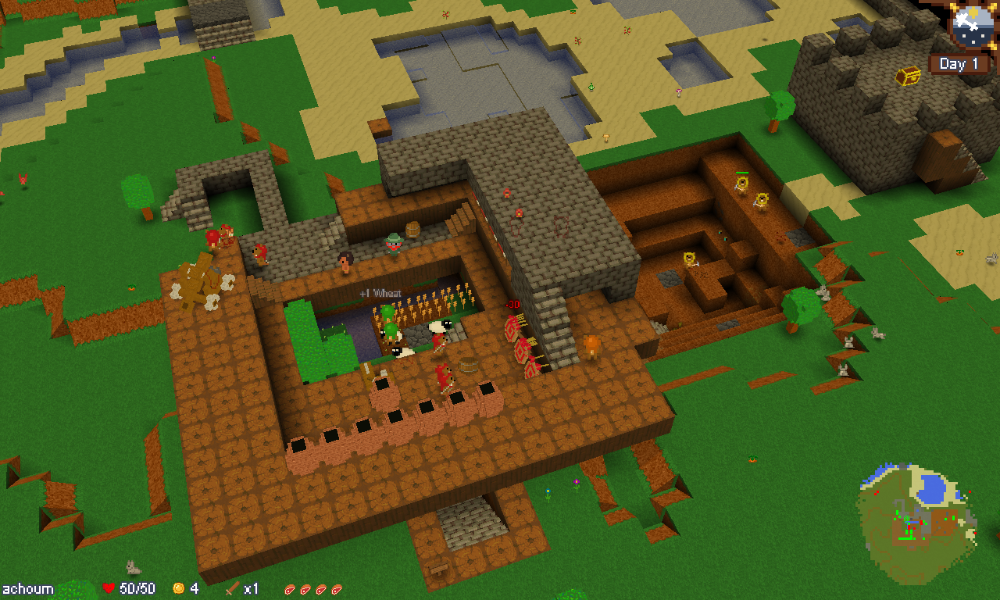
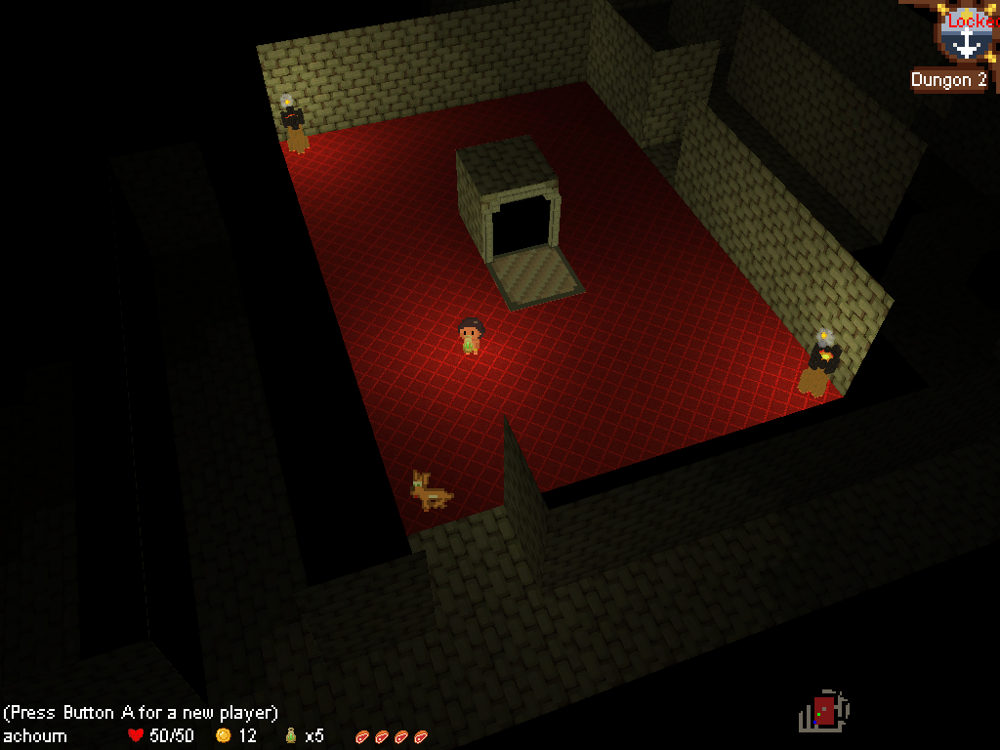
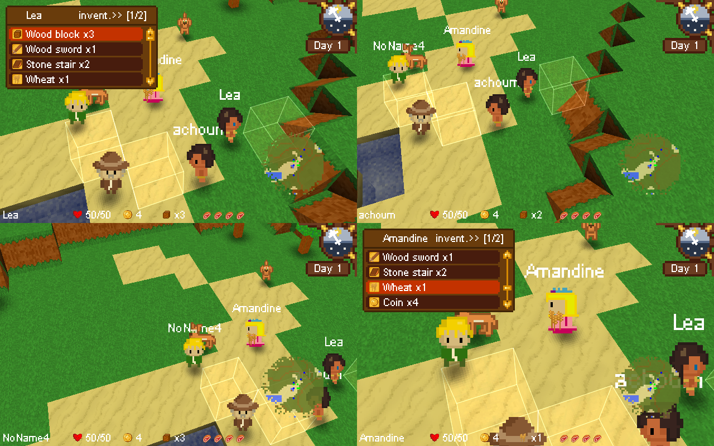
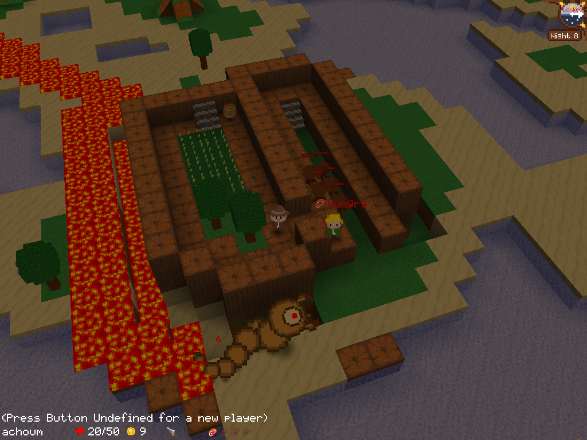
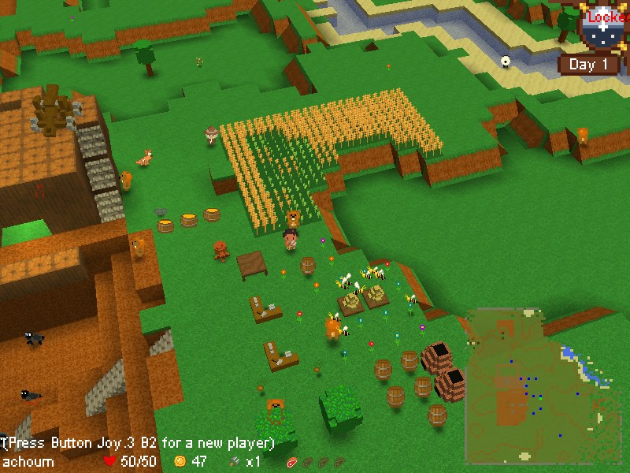
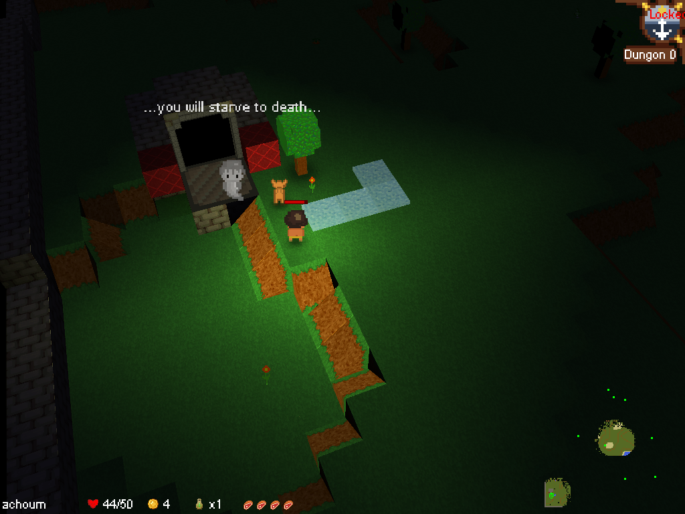
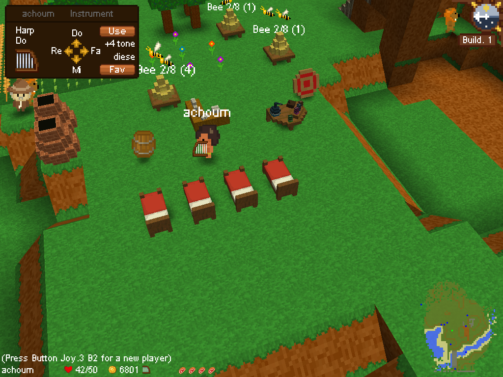
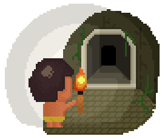
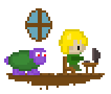
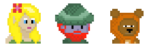

1. Introduction
You adventure begins when you wake up in a desolated world.
You find yourself with a wood sword, some seeds of wheat, your dog and a sheep.
Soon, you will find out that the world is dangerous, and that you will need to fight to
survive.
Your story begins.
You first mission will be to find something to eat, to build a shelter, and getting prepared to fight
the monsters that populate the world during the night. After the first night, you will have a full day
to enjoy your victory (if you survive).
But the next night is coming.
The more the day and night goes, the more aggressive the monsters are.
New types of monsters and bosses will appear.
In addition, you will have to be very clever to pass all the challenges the world will give you.
Hopefully, your friends are here to help you.
And if you play solo, you can always count on the "workers" (little creature that will help you
to build and make your fortress work).
Build & Defend is a rogue-like. So, don't expect to survive long on your first try. But soon, you might
be experienced enough to pass the second night.
Watch the trailer here : https://www.youtube.com/watch?v=kgarD4p-dBM
Download the free demo or buy the game here (you will have to create an account for both): https://buildanddefend.com
2. Description
Build and Defend (or B&D) is a Multi-player Rogue-like Sandbox game.
Your goal is to find resources, build a fortress, setup a defense, and discover technologies in order to
survive to hordes of creatures.
The more the game goes, the better your fortress is, but the more aggressive are the monsters.
The game is played at the 3th person. You can play alone or with your friends (several players on the
same computer, or on Internet).
The game is played exclusively with a keyboard or a joystick.
Each game is unique (unique world, unique dungeons, unique monster patterns, unique technological
recipe, etc.).
A free playable demo of the game is available and allow the player to play the game until the second
boss.
The game is divided in three parts.
- The initial search of foods and resources to start the fortress, while fighting monsters by hand.
- The design of your fortress, and the organization of the life of its inhabitants.
- The exploration of other worlds (dungeons and hell) to find rare resources and artifacts.
3. Developpement
The development of Build & Defend has started in march 2012 by Mathieu Guillame-Bert while he was writing his PhD-Thesis. After a couple of weeks of development, the game went public on http://www.java-gaming.org. The website https://buildanddefend.com was created mid April 2012. The game is inspired by two games (Cronos Battle and The Game) developed a couples of years earlier. The game has also been inspired by classical Rogue likes like NetHack, Tower defense games, Sandbox games like Dwarf fortress and Minecraft, as well as the excellent Zelda 3. Build & Defend has followed the popular indie game model consisting on selling the game at a fraction of the final price along its development. Because of the various desires of the players for news features to add the game, several "mods" have been created (survival, creative, dungeons, Devel, etc.). The minors mods are experimenting with of features that might (or might not) been added the main game.
4. Features
- 4 players on the same computer (split screen / shared screen)
- 12 players online / LAN
- Customizable skins
- Destructible world
- Randomly generated world
- Several worlds to explore (Land, dungeons, hell)
- Large number of monsters and bosses
- Cooperative game play
- Orgnanization of the life of your fortress inhabitants (Non playing characters with an Artificial intelligence)
- Dynamic fluid engine (water, lava, gas)
5. Screenshots
6. Trailler
Other videos are available at our Youtube Chanel : https://www.youtube.com/user/TheAchoum/videos.
Or at https://www.youtube.com/results?search_query=build+and+defend.
Art-works
7. They talk about us

{kind=link}
{kind=link}
{kind=link}
{kind=link}
{kind=link}
{kind=link}
{kind=link}
Stay tuned with Build & Defend
Website: https://buildanddefend.com
Facebook : https://www.facebook.com/BuildAndDefend
Twitter : https://twitter.com/mat_gb
Build And defend's CREDITS
Mathieu GUILLAME-BERT
Coder, designer, artist
Amandine REVOL
Web developper, artist
Contact
achoum@gmail.com